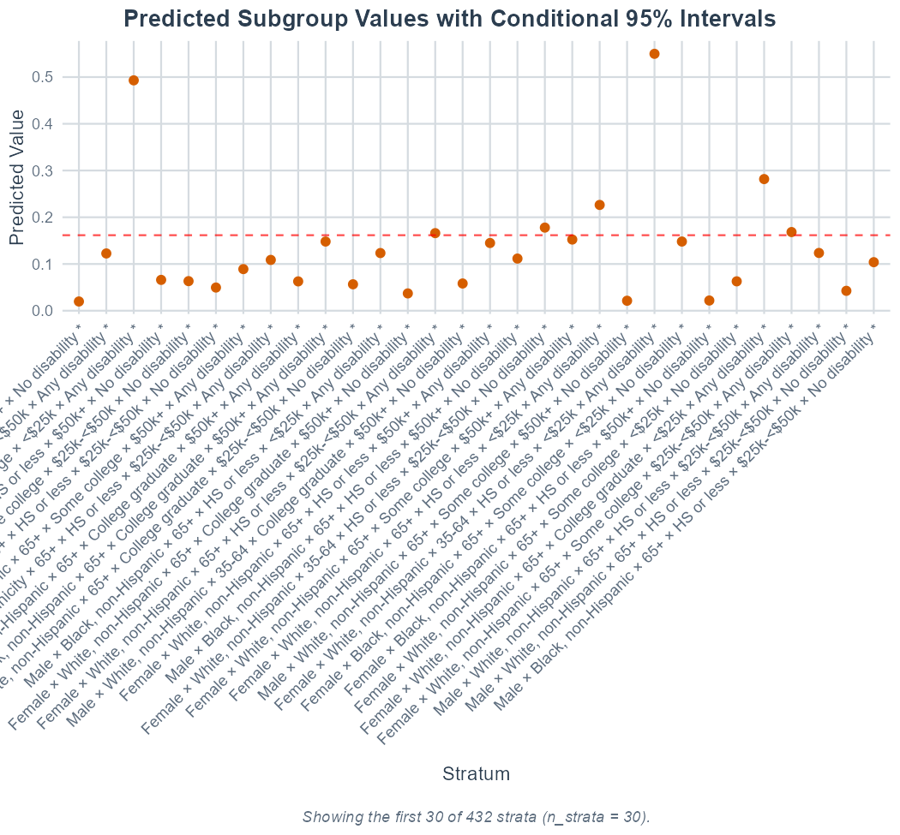

Real-data case study: BRFSS mental distress
Hamid Bulut
2026-06-29
Source:vignettes/real_data_brfss.Rmd
real_data_brfss.RmdThis case uses the 2024 Behavioral Risk Factor Surveillance System (BRFSS), a U.S. health survey released by the Centers for Disease Control and Prevention. The outcome is frequent mental distress: 14 or more of the past 30 days when mental health was not good.
The intersectional strata combine respondent sex, race/ethnicity, age, education, income, and disability. The question is whether mental distress is concentrated in particular social strata, and whether some of these intersections remain once the main effects of the dimensions are included.
CDC’s 2024 BRFSS page provides the data, codebook, and weighting documentation:
Download only the needed columns
BRFSS distributes the public-use file as a zipped SAS transport
(.XPT) file. It is large (~1 GB unzipped).
library(MAIHDA)
library(dplyr)
data_dir <- file.path("data", "brfss-2024")
dir.create(data_dir, recursive = TRUE, showWarnings = FALSE)
brfss_url <- "https://www.cdc.gov/brfss/annual_data/2024/files/LLCP2024XPT.zip"
zip_file <- file.path(data_dir, "LLCP2024XPT.zip")
if (!file.exists(zip_file)) {
download.file(brfss_url, zip_file, mode = "wb")
}
xpt_name <- unzip(zip_file, list = TRUE)$Name
xpt_name <- xpt_name[grepl("\\.xpt$", xpt_name, ignore.case = TRUE)][1]
xpt_file <- file.path(data_dir, basename(xpt_name))
if (!file.exists(xpt_file)) {
unzip(zip_file, files = xpt_name, exdir = data_dir, overwrite = TRUE)
}
raw_cols <- c(
"_MENT14D", "SEXVAR", "_IMPRACE", "_AGEG5YR", "EDUCA", "_INCOMG1",
"DEAF", "BLIND", "DECIDE", "DIFFWALK", "DIFFDRES", "DIFFALON",
"_STATE", "_LLCPWT"
)
brfss_raw <- haven::read_xpt(xpt_file, col_select = dplyr::all_of(raw_cols))
dim(brfss_raw)Recode and collapse strata
The outcome uses _MENT14D, CDC’s three-level calculated
mental-health status: zero days, 1-13 days, and 14+ days when mental
health was not good. The binary outcome below codes 14+ days as 1 and
the two lower categories as 0.
The core BRFSS file contains respondent sex (SEXVAR),
not a general gender identity measure. Optional SOGI modules can support
a different analysis, but they are not available for all states in the
national core file.
The full six-dimension crossing can create many sparse cells. For the case-study version, we collapse the highest-cardinality dimensions before fitting:
- Race/ethnicity: White non-Hispanic, Black non-Hispanic, Hispanic, and other.
- Age: 18-34, 35-64, and 65+.
- Education: high school or less, some college, and college graduate.
- Income: less than $25k, $25k to less than $50k, and $50k+.
- Disability: any vs. none, from the six core disability items.
disability_vars <- c("DEAF", "BLIND", "DECIDE", "DIFFWALK", "DIFFDRES", "DIFFALON")
disability_items <- brfss_raw[disability_vars]
any_disability <- rowSums(disability_items == 1, na.rm = TRUE) > 0
all_answered_no <- rowSums(disability_items == 2, na.rm = TRUE) == length(disability_vars)
brfss_reduced <- brfss_raw |>
transmute(
frequent_distress = case_when(
.data[["_MENT14D"]] == 3 ~ 1L,
.data[["_MENT14D"]] %in% c(1, 2) ~ 0L,
TRUE ~ NA_integer_
),
sex = factor(
case_when(SEXVAR == 1 ~ "Male", SEXVAR == 2 ~ "Female", TRUE ~ NA_character_),
levels = c("Male", "Female")
),
race_ethnicity = factor(
case_when(
.data[["_IMPRACE"]] == 1 ~ "White, non-Hispanic",
.data[["_IMPRACE"]] == 2 ~ "Black, non-Hispanic",
.data[["_IMPRACE"]] == 5 ~ "Hispanic",
.data[["_IMPRACE"]] %in% c(3, 4, 6) ~ "Other race/ethnicity",
TRUE ~ NA_character_
),
levels = c("White, non-Hispanic", "Black, non-Hispanic",
"Hispanic", "Other race/ethnicity")
),
age_group = factor(
case_when(
.data[["_AGEG5YR"]] %in% 1:3 ~ "18-34",
.data[["_AGEG5YR"]] %in% 4:9 ~ "35-64",
.data[["_AGEG5YR"]] %in% 10:13 ~ "65+",
TRUE ~ NA_character_
),
levels = c("18-34", "35-64", "65+")
),
education = factor(
case_when(
EDUCA %in% 1:4 ~ "HS or less", EDUCA == 5 ~ "Some college",
EDUCA == 6 ~ "College graduate", TRUE ~ NA_character_
),
levels = c("HS or less", "Some college", "College graduate")
),
income = factor(
case_when(
.data[["_INCOMG1"]] %in% 1:2 ~ "<$25k",
.data[["_INCOMG1"]] %in% 3:4 ~ "$25k-<$50k",
.data[["_INCOMG1"]] %in% 5:7 ~ "$50k+",
TRUE ~ NA_character_
),
levels = c("<$25k", "$25k-<$50k", "$50k+")
),
disability = factor(
case_when(
any_disability ~ "Any disability", all_answered_no ~ "No disability",
TRUE ~ NA_character_
),
levels = c("No disability", "Any disability")
),
survey_weight = .data[["_LLCPWT"]]
) |>
filter(
!is.na(frequent_distress), !is.na(sex), !is.na(race_ethnicity),
!is.na(age_group), !is.na(education), !is.na(income),
!is.na(disability), !is.na(survey_weight), survey_weight > 0
)This yields 352,714 complete-case adults in 432 intersectional strata (only 1 stratum with fewer than 20 observed adults, 20 with fewer than 50).
Fit the design-weighted MAIHDA
Passing the survey weight as sampling_weights switches
the engine to WeMix. The individual weights enter at level 1,
fixed-effect standard errors are design-consistent, and the same weights
are used for the null and adjusted models so the PCV is a
design-weighted decomposition.
brfss_fit <- maihda(
frequent_distress ~ sex + race_ethnicity + age_group + education + income + disability +
(1 | sex:race_ethnicity:age_group:education:income:disability),
data = brfss_reduced,
family = "binomial",
sampling_weights = "survey_weight", # -> engine = "wemix", design-consistent SEs
interactions = "BH"
)
brfss_fit
generics::glance(brfss_fit)| Statistic | Null (Model 1) | Adjusted (Model 2) |
|---|---|---|
| Intercept | -1.647 | -1.648 |
| Between-stratum variance | 1.426 | 0.289 |
| Between-stratum SD | 1.194 | 0.538 |
| VPC/ICC | 0.302 | 0.081 |
| PCV (null -> adjusted) | 0.797 | |
| AUC | 0.753 | 0.753 |
| MOR | 3.124 | 1.671 |
The design-weighted run gives a null-model VPC of 0.302, PCV of 0.797 (79.7%), AUC of 0.753, and MOR of 3.12. The collapsed intersectional strata carry between-stratum concentration of frequent mental distress, and most of it is captured by the additive main effects of the six dimensions under this specification (the between-stratum variance falls from 1.426 to 0.289 on the latent scale).
Which strata drive the pattern?
Now the next question is where the risk is concentrated.
maihda_table() ranks strata by their null-model predicted
risk (the simple-intersectional stratum predictions, pass
which = "adjusted" to rank by the adjusted model instead),
while the interaction table focuses on deviations from the additive
expectation.
tab <- maihda_table(brfss_fit)
head(tab$strata, 10) # highest predicted risk
tail(tab$strata, 10) # lowest predicted risk| Stratum | Predicted | Weighted prevalence | Raw n |
|---|---|---|---|
| Female × Other race/ethnicity × 18-34 × HS or less × <$25k × Any disability | 0.720 | 0.720 | 115 |
| Female × Other race/ethnicity × 18-34 × Some college × $25k-<$50k × Any disability | 0.682 | 0.682 | 86 |
| Female × White, non-Hispanic × 18-34 × Some college × <$25k × Any disability | 0.669 | 0.669 | 284 |
| Female × Hispanic × 18-34 × College graduate × <$25k × Any disability | 0.642 | 0.642 | 83 |
| Female × Other race/ethnicity × 18-34 × College graduate × <$25k × Any disability | 0.631 | 0.631 | 25 |
| Female × Other race/ethnicity × 18-34 × College graduate × $25k-<$50k × Any disability | 0.623 | 0.623 | 53 |
| Female × White, non-Hispanic × 18-34 × HS or less × $25k-<$50k × Any disability | 0.622 | 0.622 | 636 |
| Female × Black, non-Hispanic × 18-34 × College graduate × $25k-<$50k × Any disability | 0.607 | 0.607 | 45 |
| Female × Other race/ethnicity × 18-34 × Some college × <$25k × Any disability | 0.606 | 0.606 | 59 |
| Female × White, non-Hispanic × 18-34 × HS or less × <$25k × Any disability | 0.599 | 0.599 | 457 |
brfss_fit$interactions |>
dplyr::arrange(dplyr::desc(abs(interaction))) |>
dplyr::select(stratum, label, interaction, lower, upper, p_adjusted, flagged) |>
head(20)| Stratum | Interaction | Lower | Upper | FDR p | Direction |
|---|---|---|---|---|---|
| Male × Black, non-Hispanic × 65+ × College graduate × <$25k × No disability | -2.995 | -3.523 | -2.467 | 1.09e-28 | below |
| Female × Hispanic × 65+ × College graduate × $25k-<$50k × No disability | -2.351 | -2.494 | -2.208 | 7.56e-228 | below |
| Female × Other race/ethnicity × 65+ × Some college × <$25k × No disability | -2.212 | -2.313 | -2.110 | 0.00e+00 | below |
| Male × Other race/ethnicity × 65+ × Some college × <$25k × No disability | 1.746 | 1.714 | 1.779 | 0.00e+00 | above |
| Female × Other race/ethnicity × 65+ × College graduate × <$25k × No disability | -1.697 | -1.886 | -1.509 | 1.85e-69 | below |
| Female × Hispanic × 65+ × HS or less × $50k+ × Any disability | -1.578 | -1.622 | -1.533 | 0.00e+00 | below |
| Male × Black, non-Hispanic × 65+ × HS or less × $50k+ × No disability | 1.554 | 1.539 | 1.569 | 0.00e+00 | above |
| Female × Hispanic × 65+ × Some college × $50k+ × No disability | -1.464 | -1.529 | -1.399 | 0.00e+00 | below |
| Male × White, non-Hispanic × 65+ × College graduate × <$25k × No disability | 1.441 | 1.420 | 1.462 | 0.00e+00 | above |
| Male × Other race/ethnicity × 65+ × College graduate × $25k-<$50k × No disability | -1.433 | -1.527 | -1.339 | 1.87e-196 | below |
| Male × Other race/ethnicity × 65+ × HS or less × <$25k × No disability | 1.432 | 1.401 | 1.462 | 0.00e+00 | above |
| Female × Black, non-Hispanic × 18-34 × College graduate × <$25k × Any disability | -1.416 | -1.459 | -1.374 | 0.00e+00 | below |
| Male × Other race/ethnicity × 65+ × HS or less × <$25k × Any disability | 1.386 | 1.373 | 1.398 | 0.00e+00 | above |
| Male × Hispanic × 65+ × Some college × $50k+ × No disability | -1.350 | -1.417 | -1.283 | 0.00e+00 | below |
| Male × Other race/ethnicity × 65+ × College graduate × <$25k × No disability | -1.294 | -1.410 | -1.178 | 1.23e-105 | below |
| Male × Black, non-Hispanic × 65+ × HS or less × $25k-<$50k × No disability | 1.276 | 1.260 | 1.292 | 0.00e+00 | above |
| Female × Hispanic × 65+ × HS or less × $50k+ × No disability | 1.275 | 1.256 | 1.294 | 0.00e+00 | above |
| Male × Hispanic × 65+ × Some college × $50k+ × Any disability | 1.259 | 1.240 | 1.277 | 0.00e+00 | above |
| Female × Black, non-Hispanic × 35-64 × College graduate × <$25k × No disability | 1.230 | 1.213 | 1.247 | 0.00e+00 | above |
| Female × Black, non-Hispanic × 65+ × Some college × <$25k × No disability | 1.199 | 1.175 | 1.223 | 0.00e+00 | above |
The two tables answer different questions. The ranked table identifies the highest and lowest predicted risks. The interaction table identifies strata whose predicted risks are higher or lower than expected from the additive main effects alone. A stratum can have high predicted risk because it stacks many high-risk main-effect categories, without having a large residual interaction.
Plot the case study
Useful figures for showcasing the results are the variance partition, the ranked predicted strata, and the additive-vs-intersectional decomposition.
plot(brfss_fit, type = "vpc")
plot(brfss_fit, type = "predicted", n_strata = 30, highlight_interactions = TRUE)
plot(brfss_fit, type = "effect_decomp", highlight_interactions = TRUE)
Variance partition (VPC): share of latent-scale variation between intersectional strata.

Top 30 strata by predicted risk of frequent mental distress; BH-flagged interactions highlighted.

Effect decomposition: additive disadvantage vs. residual intersectional deviation.
Reporting the results
Pulling the analysis together, a concise write-up can separate the variance decomposition, the ranked predicted risks, and the residual interaction screen.
Results
We fitted two logistic MAIHDA models with 352,714 adults nested within 432 intersectional strata defined by the cross-classification of sex, race/ethnicity, age, education, household income, and disability. The models applied the BRFSS final adult sampling weights to account for the survey design in this complete-case analysis. In the simple intersectional model, the variance partition coefficient indicated that 30.2% of the variance in the latent propensity for frequent mental distress lay between intersectional strata. The strata also had moderate discriminatory accuracy for the individual outcome (area under the ROC curve, AUC = 0.75), and the median odds ratio (MOR) was 3.12. In median pairwise comparisons, moving from a lower- to a higher-risk stratum was therefore associated with a little more than a threefold difference in the odds of frequent distress.
After adding the additive main effects of the six stratum-defining dimensions, the between-stratum variance fell from 1.43 to 0.29, a proportional change in variance (PCV) of 79.7%. The residual VPC was 8.1% and the residual MOR was 1.67. The additive main effects therefore reproduced roughly four-fifths of the between-stratum variance, leaving a smaller residual component for non-additive intersectional departures from the main-effect expectation.
Predicted prevalences of frequent mental distress varied markedly across strata. The highest-ranked stratum combined female sex, age 18-34, other race/ethnicity, high school education or less, household income below $25,000, and disability, with a predicted prevalence of 72.0%; the other top-ranked strata similarly combined younger age, female sex, disability, and lower or middle household income. The residual interaction table answered the question which strata were higher or lower than expected after the additive main effects were included. The largest absolute residuals were concentrated mostly among older (65+) strata and ran in both directions, with both above- and below-additive deviations.
References
- Centers for Disease Control and Prevention. Behavioral Risk Factor Surveillance System: 2024 Survey Data and Documentation.
- Evans, C. R., Leckie, G., Subramanian, S. V., Bell, A., & Merlo,
J. (2024). A tutorial for conducting intersectional multilevel analysis
of individual heterogeneity and discriminatory accuracy (MAIHDA).
SSM - Population Health, 26,
- Evans, C. R., Williams, D. R., Onnela, J. P., & Subramanian, S. V. (2018). A multilevel approach to modeling health inequalities at the intersection of multiple social identities. Social Science & Medicine, 203, 64-73.
- Merlo, J. (2018). Multilevel analysis of individual heterogeneity and discriminatory accuracy (MAIHDA) within an intersectional framework. Social Science & Medicine, 203, 74-80.
- Rabe-Hesketh, S., & Skrondal, A. (2006). Multilevel modelling of complex survey data. Journal of the Royal Statistical Society A, 169(4), 805-827.